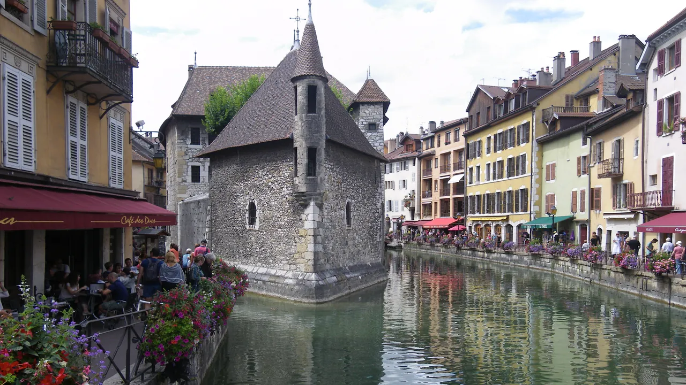
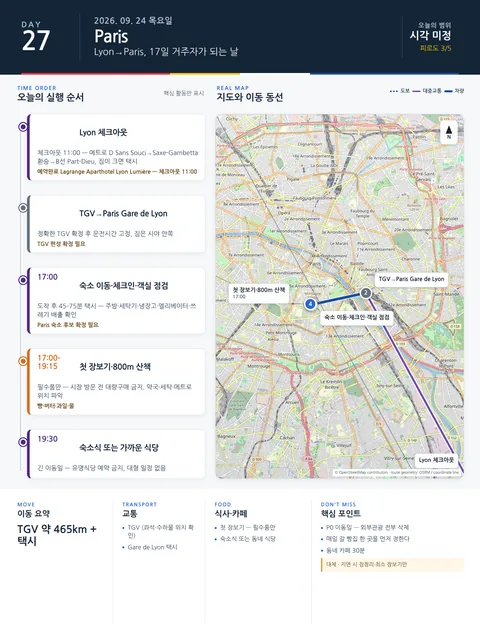

Day 27 · 9/24 목 · Paris

오늘의 주요 장소


P0 연결거점 이동양쪽 챕터
- 핵심 실행
- Lyon 11:00 체크아웃→TGV→15박 체크인
- 권장 출발
- 체크아웃 11:00·열차 기준 역산
- 완충
- Gare de Lyon→숙소 택시·체크인 2시간
- 예약
- 2건 — 완료 0 · 미확정 2 · 현황
이동일 체크리스트
- 출발·체크아웃체크아웃 11:00·열차 기준 역산
- 경유·핵심Lyon 11:00 체크아웃→TGV→15박 체크인
- 완충Gare de Lyon→숙소 택시·체크인 2시간
- 지연 시 생략외부관광 전부
- 대체안짐정리·최소 장보기만
- 잠금·예약TGV·Paris 숙소
실행성 감사의 값을 이동 순서로 재배열한 것이다. 체크인 시각·주차 등 미확정 값은 확정 후 채운다.
시간표
Lyon
| 상대시간 | 일정 | 실행 포인트 |
|---|---|---|
| 기차 4시간 전 | 기상·숙소 아침·짐정리 | 여권·티켓·귀중품은 몸에 지닌 작은 가방으로 분리 |
| 기차 3시간 전 | 선택: Saint-Antoine 시장 또는 Rhône 강변 30분 | 열차가 11시 이후일 때만. 시장은 금요일 오전 운영 |
| 기차 2시간 전 | 체크아웃 | 숙소 영수증·분실물 확인 |
| 기차 90분 전 | 숙소→Part-Dieu 택시 | 큰 짐이므로 메트로 환승보다 택시 우선 |
| 기차 30분 전 | 플랫폼 부근 대기 | 카페에 짐을 흩어두지 않고, 캐리어 손잡이를 잡거나 다리 사이에 둔다 |
| 탑승 | Lyon→Paris TGV | 짐 선반이 시야 밖이면 자물쇠·와이어스트랩 사용 고려 |
Paris
| 시간 | 일정 | 실행 포인트 |
|---|---|---|
| 오전–오후 | Lyon Part-Dieu → Paris Gare de Lyon | 정확한 TGV 확정 후 문전시간 고정 |
| 도착 후 45–75분 | 숙소 이동·체크인 | 15박 수하물이므로 5구·15구 모두 택시가 합리적 |
| +60분 | 객실 점검 | 주방, 세탁기/세탁실, 냉장고, 환기, 엘리베이터, 쓰레기 배출 확인 |
| 17:00 전후 | 슈퍼·빵집 첫 장보기 | 아침·물 등 필수품만 구매. 시장 방문 전 대량구매 금지 |
| 18:30–19:15 | 숙소 반경 800m 산책 | 약국·세탁·시장·메트로·택시 승강장 위치만 파악 |
| 19:30 이후 | 숙소식 또는 가까운 식당 | 긴 이동일에는 유명식당 예약 금지 |
피로도
3/5
이 날의 메모
Lyon
생활권의 마지막 아침, Part-Dieu에서 파리 이동
- 오늘의 결론: 파리 체크인까지 이어지는 이동일이므로 리옹에서 새로운 관광을 추가하지 않는다.
- 상태: 고정
실행 시간표
오늘 지도
대안 대책 (우천·휴관·교통 장애)
- 철도지연 시 파리 첫날 저녁 외식 삭제
Paris
Gare de Lyon 도착, ‘관광객’이 아니라 ‘16일 거주자’가 되는 날 도착
오늘의 필수: 체크인·짐정리·최소 장보기·귀가길 학습. 대형 미술관·공연·근교 일정은 넣지 않는다.
꼭 해볼 것
- 한 번 이용할 슈퍼보다 매일 갈 빵집 한 곳을 먼저 정한다.
- 메트로역의 어느 출구가 숙소와 가까운지 실제로 확인한다.
- 파리 첫날 야경을 보러 멀리 가지 않고, 동네 카페에 30분 앉는다.
상세 실행 확인
- 최고 리스크
- 대형수하물·체크인
- 우선 삭제
- 외부관광 전부
- 대체안
- 짐정리·최소 장보기만
- 식사·휴식
- 숙소권 간단식
- 잠금 필요
- TGV·Paris 숙소
Google 실행지도
Lyon → Paris TGV — 16박 장기체류 시작
지도 펼치기
지도는 펼칠 때만 불러옵니다.
Daily Action Map

실제 좌표와 OpenStreetMap을 사용한 실행용 요약입니다. 도로·대중교통 상황은 출발 직전에 다시 확인하세요.